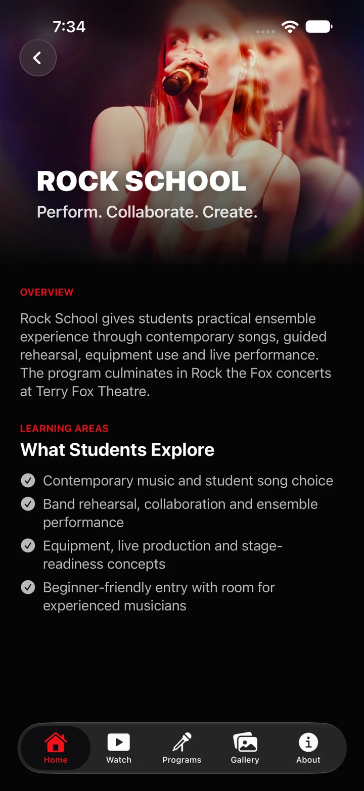
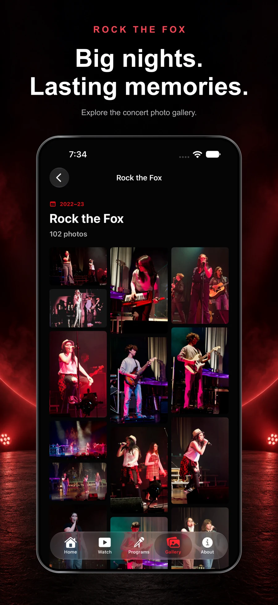
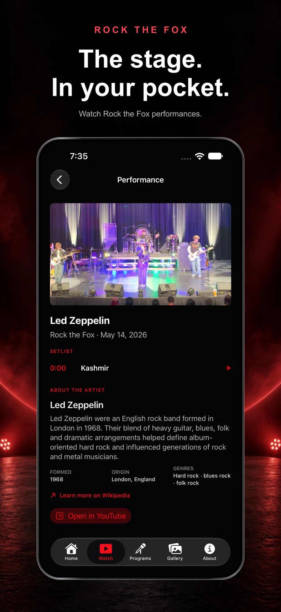
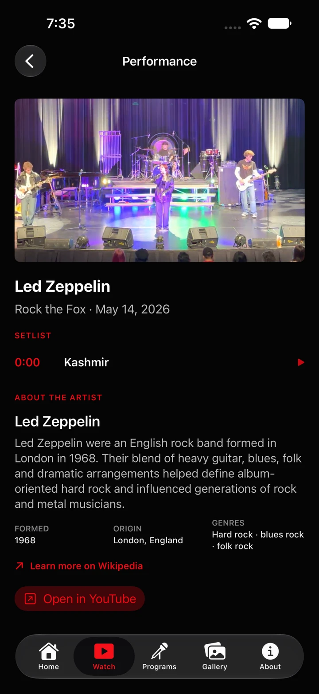
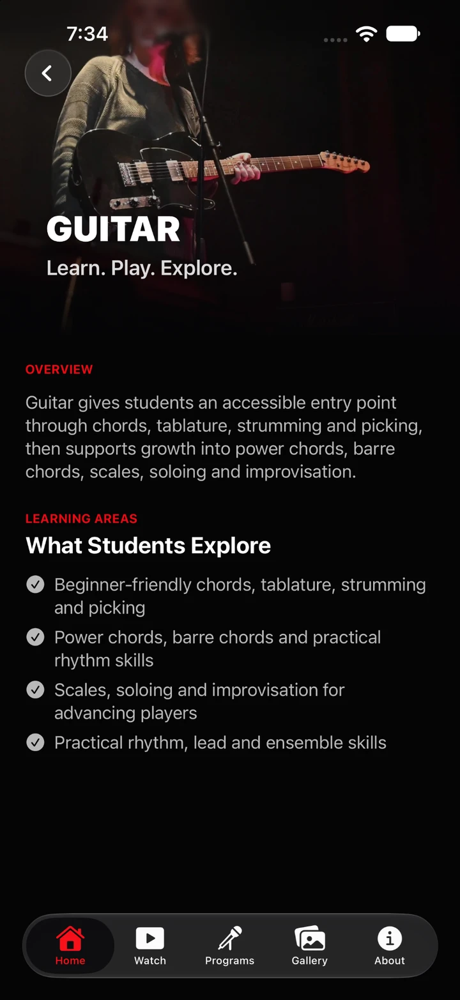
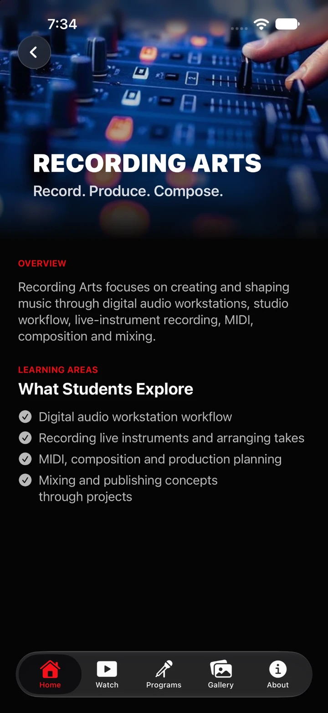

01 / Rock SchoolPerform. Collaborate.
Perform. Collaborate.
Create.
Explore ensemble playing, guided rehearsal, and live performance. See how the program comes together on the Rock the Fox stage.
Terry Fox Secondary · Music community
Made for the music. Made for you.
The performances you remember.
The moments you want to keep.
Watch Rock the Fox performances, discover our music programs, and explore the concert photo gallery. One place to stay close to the music.
Rock the Fox for iPhone


Watch. Explore. Relive.
Watch / Take it from the top
Bring the concert back, wherever you are.
Open a performance, explore its setlist, and learn about the artist behind the music. Rock the Fox puts the performance and its context together.

Explore / Find your place in the music
Get to know the music programs at Terry Fox Secondary, from your first chords to the energy of playing together.

Explore ensemble playing, guided rehearsal, and live performance. See how the program comes together on the Rock the Fox stage.

Discover a program that moves from chords, tablature, and rhythm to scales, soloing, and improvisation.

Explore the craft behind the sound: studio workflow, recording, MIDI, composition, and mixing.

Relive / More than a moment
The lights. The faces. The feeling.
Browse concert photo collections and open a moment for a closer look. Revisit the people and performances that make Rock the Fox our own.
A closer look
Explore the app screens. Select an image to take a closer look.
Your music community. Always close.
Explore Rock the Fox on iPhone.
{kind=link}
{kind=link}
{kind=link}
{kind=link}
{kind=link}
{kind=link}